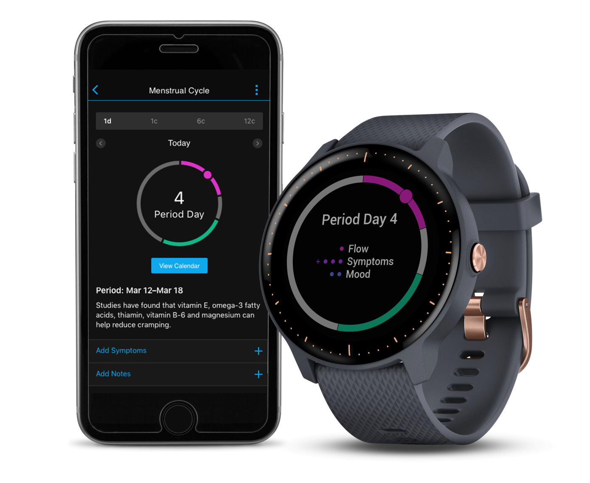
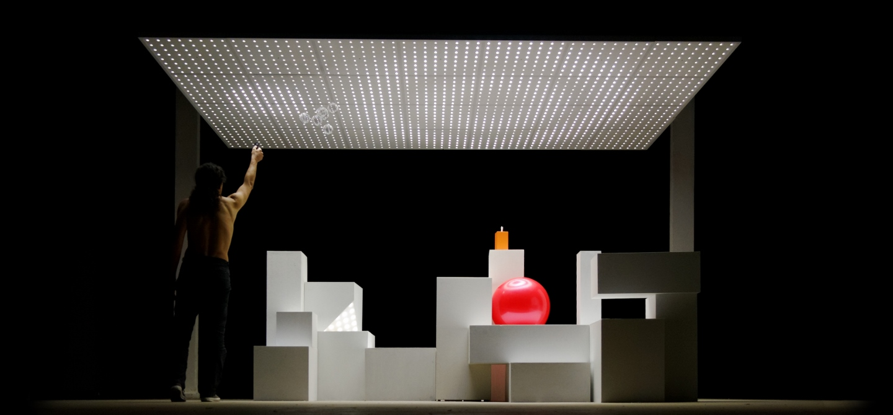

Lala Op deze website is mijn proces binnen het vak Human Computer Interaction Technologies te volgen. In dit portfolio staan opdrachten, onderzoek, reflecties en resultaten van de lab weeks. Mijn naam is Lieke, ik ben negentien jaar en tweedejaars CMD-student. In mijn vrije tijd ben ik graag met vrienden of bezig met fotografie. Tijdens dit vak ga ik kennis maken met nieuwe technieken en daar heb ik veel zin in, ik kijk er naar uit om twee weken lang bezig te zijn met een zelfbedachte installatie en alles zelf uit te mogen werken. Ik hoop veel te leren op het gebied van elektronica, technieken en ik hoop zelf een tof concept neer te kunnen zetten tijdens de lab weeks.
Het eerste onderwerp gaat over draagbare elektronica: handige gadgets die de gebruiker op de hoogte houden van de gebeurtenissen in de omgeving of in het lichaam. Ik zal hier een stukje onderzoek naar doen, een opdracht over maken en beschrijven wat draagbare elektronica voor mijzelf betekent.
Ik ben zelf erg gefascineerd door smart tattoos. Vooral de smart tattoos die wat bijdragen aan de gezondheid van de gebruiker vind ik interessant. Tattoeages decoreren een lichaam, maar kunnen dus ook andere functies hebben, zoals het meten van het bloedsuiker (wat handig is voor diabeten), maar ook het veranderen van kanaal op de televisie. Naast dat het aan de gezondheid kan bijdragen, kan het ook sociale interactie tussen mensen stimuleren. Er is een groep PhD studenten die samen met Microsoft Researches een aantal toffe wearables hebben uitgevonden. Een van deze wearables is een smart tattoo, genaamd DuoSkin. Met deze smart tattoo is het mogelijk om data op te halen en de tattoo als trackpad te gebruiken en daarmee je smartphone te besturen. Ook verandert de tattoeage van kleur op basis van de temperatuur. Het is zelfs mogelijk om een paar LED lichtjes in de tattoo te verwerken, wat ik zelf onvoorstelbaar en zo tof vind. De functie binnen de tattoo om sociale interactie tussen mensen te stimuleren, gaat via een NFC tag. In deze tag zitten kleine microchips die data kunnen opslaan en naar apparaten kunnen sturen. Ze hopen dit in de toekomst te kunnen uitbreiden naar data van ov-chipkaarten, identiteitskaarten en bioscooptickets. Deze functie met de NFC tag zou sociale interactie kunnen stimuleren, omdat de data snel verzonden kan worden en gesprekken zo soepeler en sneller verlopen
Bronnen Inside4Tech
Wearables dragen bij aan onze gezondheid. Denk aan een tracker, zoals de FitBit. We kunnen hiermee onze stappen tellen, hartslag meten, het aantal slaapuren bijhouden en op die manier bijhouden of we goed op weg zijn. Een ander voorbeeld zijn smartwatches, zoals de Apple Watch. Er kan ook makkelijker gedacht worden, gehoorapparaten zijn namelijk ook wearables: ze maken het mogelijk om beter te kunnen horen en dragen daardoor bij aan onze gezondheid. Wearables worden steeds functioneler uitgebracht en daarbij wordt ook gelet op de draagbaarheid. Er worden ringen, kleding en schoenen met daarin elektronica verwerkt uitgebracht. Wat ik zelf zo leuk aan wearables vind, zijn de nieuwe functies die worden toegevoegd. We zitten nu in de periode dat er zoveel nieuwe technologische toepassingen worden bedacht en uitgewerkt, ik sta elke keer nog versteld van de nieuwe uitvindingen. Ik vind de schoenen van PizzaHut waarmee je pizza kan bestellen geniaal bedacht, maar er worden ook functies bedacht die echt een toegevoegde waarde hebben aan het leven van de gebruiker. Zo heeft het merk Garmin laatst een nieuwe functie aan hun smartwatch toegevoegd: vrouwelijke gebruikers kunnen hun menstruatie cyclus erin bijhouden. Gebruikers kunnen de lengte van de cyclus vastleggen of symptonen vastleggen. Ook krijgt de gebruiker korte stukken informatie over haar cyclus met daarin ook tips over voedsel, beweging, etc. Een andere wearable dat bijdraagt aan de gezondheid van de gebruiker is de CareWear Light Patch. Geblesseerde sporters en atleten kunnen met deze patch beter herstellen en blijven sporten. In de patch zit namelijk blauw en rood licht wat de blessure sneller heelt, hierdoor herstelt de sporter sneller. De patch moet worden aangebracht op het pijnlijke lichaamsdeel, worden aangesloten op de oplader en dan kan de gebruiker langzaamaan gaan sporten.
Bronnen: TechCrunch Wearable Technologies Hoorcollege Wearables – Tim van den Bosch – 24 april 2019
Ik denk dat wearables nog een grote toekomst voor zich hebben en in allerlei gebieden kunnen worden ontwikkeld. Ik vind ze een goede toegevoegde waarde aan het huidige leven, vooral het punt dat ze voor ondersteuning kunnen zorgen. Ik heb zelf nog geen wearable, maar zit er wel een tijdje over na te denken om een smartwatch of FitBit te kopen. Ik ben best benieuwd naar het aantal stappen dat ik dagelijks zet en zou op sommige momenten ook best mijn hartslag willen kunnen meten. Tegenwoordig willen we alles weten en ontwikkelen we daar nieuwe technologie voor. Wearables voegen hier zeker iets aan toe, maar ik hoop dat we er in de toekomst niet al te veel in doordraaien. Ik vond de Google Glass heel gaaf, maar toch ook nog een beetje eng en ik snap dat dat geen enorm succes is geworden. Smart Contact Lenses gaan mij bijvoorbeeld echt een stap te ver. We moeten het allemaal wel menselijk houden, maar zolang wearables een ondersteuning kunnen zijn vind ik het een hele mooie technologie.
De installatie is een digitale wand waar de ene gebruiker complimenten naar de andere gebruiker kan swipen en ‘gooien’. Op het scherm zien de gebruikers zichzelf door een camera en staan er al complimenten klaar in figuren die de gebruiker met beweging naar de ander kan swipen. De installatie is dus multi-player, cooperative, parallel knowing, shared space en shared body. De interactie tussen de gebruikers en het system: het systeem herkent beweging en koppelt die aan de figuren met complimenten. Wanneer de gebruiker dus een vegende beweging van een figuur naar de andere gebruiker maakt, speel het systeem hierin mee en wordt de figuur ook daadwerkelijk naar de andere gebruiker gestuurd. Met deze playful interface wordt positief gedrag gestimuleerd, omdat mensen elkaar sneller een compliment geven wanneer ze langs de installatie lopen. De input technology gaat via beweging van de gebruiker, deze wordt opgenomen door de webcam in het scherm en infrared sensors die beweging detecteren. De output wordt op het scherm weergegeven, namelijk de beweging van de complimenten tussen de gebruikers. Er zal ook een geluid te horen zijn wanneer het compliment gestuurd en ontvangen wordt. Doordat de complimenten altijd te geven zijn, is de installatie open-ended.
Op zoek naar een playful interface die ik nog niet eerder had gezien, kwam ik de Ambianti Tiles tegen. Deze interface is ontwikkeld door Ambianti B.V., een bedrijf dat high tech materiaal ontwikkelt voor dagelijkse activiteiten. Het bedrijf vestigt zich in Eindhoven. Ambianti Tiles bestaat uit een plafond vol lampen die vanuit een mobiel apparaat bediend kunnen worden. Op een apparaat kunnen dingen geschreven of getekend worden, dat vervolgens op het plafond verschijnt. Ook de helderheid kan met een swipe aangepast worden. De gebruiker heeft de controle over elke ledlamp en kan hiermee nieuwe patronen maken en je creativiteit de vrije loop laten. Hierdoor wordt de fysieke aanwezigheid van de gebruiker in een interactie met licht omgezet. De input wordt dus gedaan door de gebruiker met een mobiel apparaat door middel van de Ambianti app, waarmee hij de lampjes kan besturen. De output wordt vervolgens in het plafond zichtbaar in de vorm van ledlampen. Deze playful interaction zou met meerdere personen gedaan kunnen worden, maar is makkelijker wanneer één persoon het speelt, aangezien het lichtpatroon vanaf één apparaat gemaakt wordt. Het is geen concurrerend spel, maar is ontwikkeld om de creativiteit van de gebruiker te laten lopen en daardoor creatiever te worden. De gebruikers zouden kunnen samenwerken, door bijvoorbeeld samen een patroon te bedenken. Echter is het, zoals eerder benoemd, eerder ontworpen voor een single player. De installatie valt onder interdependent actions bij shared object en shared space, wanneer de app door meerdere gebruikers wordt gebruikt, delen ze het mobiele apparaat met Ambianti applicatie en de ruimte van het plafond.
 Bronnen: AmbiantiIk vind playful interfaces altijd erg interessant. Vooral het feit dat ze informatieve stof op een speelwijze op de gebruiker kunnen overbrengen spreekt mij erg aan. Ik ben een paar keer op de Dutch Design Week Eindhoven geweest en daar zijn ook altijd een aantal playful interfaces die ik altijd leuk vind om te doen en interessant vind om te bekijken. Ik denk dat we wel meer gebruik mogen maken van playful interfaces, omdat het ook heel leerzaam kan zijn. Kinderen zouden er op een speelse manier door kunnen leren, het zou afleiding kunnen bieden voor patiënten in een ziekenhuis, of positief gedrag kunnen stimuleren. Ik hoop dat er in de toekomst nog meer playful interfaces worden ontwikkeld en het lijkt me erg leuk en interessant om daar zelf aan mee te werken.
Het homeostasis model geeft een overzicht van de benodigdheden voor een persoon of object om in balans te komen en om in die balans te blijven. Een mens heeft bijvoorbeeld de elementen honger, temperatuur en hormonen, zolang deze in balans zijn zal de persoon zich goed voelen. Een scheerapparaat heeft bijvoorbeeld elementen als energie, haar en veiligheid nodig om in balans te blijven. De benodigdheden per object of persoon worden door eigen acties of prikkels van buitenaf beïnvloedt. Ik zal het homeostasis model op een fiets toepassen. De behoefte van de fiets is om vooruit te gaan, te bewegen en dit vooral op een veilige manier te doen. Hier is energie voor nodig, dit gebeurt bij een fiets door middel van de persoon die zich erop bevindt. Deze persoon beweegt de trappers, waardoor de fiets naar voren komt en kan rijden. Bij een normale fiets is deze persoon de enige bron van energie, echter zijn er ook elektrische fietsen die met hulp van een accu nog iets sneller kunnen rijden. Dit biedt ook ondersteuning voor de persoon op de fiets. De persoon die aan het fietsen is heeft nog meer invloed dan het geven van energie, diegene bepaalt namelijk ook welke kant de fiets op gaat door het stuur naar links of rechts te bewegen. Naast het geven van energie door de trappers te bedienen, kan een fiets ook worden afgeremd. Dit is een deel van de veiligheid: in een gevaarlijke situatie of wanneer de persoon van de fiets af wilt stappen, is het nodig om vaart te minderen en tot stilstand te komen. Ook met lichten op de fiets, wordt fietsen een stuk veiliger. Het voor- en achterlicht zorgt ervoor dat andere verkeersdeelnemers de fiets in het donker ook kunnen zien. Zo kan er rekening mee worden gehouden en worden gevaarlijke situaties deels voorkomen. De fiets zelf heeft dus niet veel invloed op zijn eigen acties, maar wordt vooral beïnvloed door de persoon die de fiets bestuurt.
Bij artificial creatures gaat het er vooral om om emotie te geven aan een computer. Dit kan bijvoorbeeld gebruikt worden om robots persoonlijker en menselijk te maken, maar kan ook in games en films worden toegepast. Toen ik op zoek ging naar een project was ik erg benieuwd in hoeverre aritificial intelligence wordt toegepast. Ik kwam een TedTalk tegen van Rana el Kaliouby, zij is een egyptisch-amerikaanse computerwetenschapper die zich erg op technologieontwikkeling en expressieherkenning richt. Toen zij van Egypte naar Engeland verhuisde om daar een PhD-programma te volgen, miste zij haar familie en vrienden in Egypte heel erg. Ze merkte op dat ze veel meer met haar laptop was, dan dat ze bij andere mensen was, waardoor ze zich eenzaam voelde en heimwee kreeg. Ze kwam erachter dat haar laptop niet wist hoe zij zich voelde: het apparaat kon alles voor haar doen, maar wist niet of ze blij was of dat ze een moeilijke dag had. Samen met haar team ging ze aan de slag met een onderzoek naar expressieherkenning met de focus op het menselijk gezicht. Door een systeem duizenden voorbeelden van glimlachende mensen van verschillende etniciteit, leeftijd en geslacht te geven, gaat het systeem hier een patroon in ontdekken. Rana el Kaliouby en haar team gaven de algroritmen deze voorbeelden van elke emotie. Op deze manier konden de algoritmen bij een nieuw gezicht zelf de emotie van die persoon bepalen. De TedTalk komt uit 2015, op dat moment bestond de emotiedatabase uit 12 miljard gegevens, o.a. 2,9 miljoen filmpjes van menselijke gezichten uit 75 landen. Met deze technologie is veel mogelijk. Zo zijn er brillen met emotietechnologie die het mogelijk maken dat mensen met een visuele handicap de emotie van anderen alsnog kunnen lezen. Ook mensen met autisme kunnen hiermee makkelijker de emoties van anderen lezen. Een idee voor de toekomst dat Rana el Kaliouby noemt: apps van scholen die door middel van emotietechnologie kunnen zien of de gebruiker (student) de leerstof snapt en daardoor de snelheid van de les kunnen aanpassen. Rana el Kaliouby zei in de TedTalk dat ze dacht binnen vijf jaar een emotiechip in elk apparaat te willen hebben. Het is inmiddels vier jaar na de TedTalk en er zijn naar mijn weten nog geen emotiechips in omloop. Het lijkt mij echter enorm interessant als dit wel zou worden toegepast. Ik kijk uit naar de toekomst en ik ben benieuwd hoe dit zich verder gaat ontwikkelen.
Bronnen: TedTalk Rana el Kaliouby Hoorcollege Artificial Creatures – Chris Heydra – 8 mei 2019
Na het zien van de TedTalk ben ik erg geïnteresseerd geraakt in het project waar Rana el Kaliouby aan werkt. Ik heb een nieuwe fascinatie voor emotietechnologie en ik ben erg benieuwd waar dit in de toekomst heengaat. Emotietechnologie zou een grote bijdrage kunnen zijn in de samenleving, zoals in het vorige deel beschreven voor scholieren of mensen met autisme. Ik kan me voorstellen dat het ook een toegevoegde waarde in de ouderenzorg zou kunnen zijn. In mijn eigen leven maak ik nu geen gebruik van emotietechnologie, maar ik denk dat ik het zeker wel zal gebruiken zodra het wordt gelanceerd en betaalbaar is.
--
Augmented reality is letterlijk vertaald toegevoegde realiteit. Aan een beeld van werkelijkheid worden elementen met een computer toegevoegd. Iedereen kent de game Pokémon Go, dit is een voorbeeld van augmented reality. Ook met apps van o.a. Flexa kan je door middel van augmented reality kijken of een kleur mooi zal staan op een muur. Virtual reality is een een gesimuleerde werkelijkheid. Door middel van bijvoorbeeld een VR-bril kan de gebruiker zich in een andere wereld wanen. Hiermee kunnen games intenser worden en zit de gamer echt in de wereld van de game. Naast een entertainende functie, wordt virtual reality ook toegepast in educatie en zorg. Ik kwam het bedrijf The Virtual Dutch Men tegen en zij doen veel toffe projecten met zowel VR als AR. Een project van hun dat ik erg vernieuwend en leuk vind is de samenwerking van The Virtual Dutch Men met bouwbedrijf Roosdom Tijhuis. TVDM (The Virtual Dutch Men) heeft een virtual reality simulatie voor hun ontwikkeld waarmee kopers van een nieuwbouwhuis hun toekomstige huis al kunnen inrichten. Op deze manier komen ze niet voor verrassingen te staan met bijvoorbeeld kleuren, vloeren, plaats van stopcontacten etc. Als de koper de VR-bril op heeft tijdens een gesprek met de makelaar, kan de makelaar live aanpassingen maken na het krijgen van opmerkingen over afbouwopties. Met de VR-bril krijgen de kopers een levensechte indruk over hun toekomstige huis. Ze zijn nu ook bezig met updates voor de virtual reality, in de toekomst is het bijvoorbeeld ook mogelijk om het huis virtueel in te richten en gebruik te maken van interactieve elementen.
Bronnen: The Virtual Dutch Men Roosdom Tijhuis
Tijdens twee workshops heb ik kennis gemaakt met Arduino. Ik vind het een lastige, maar vooral interessante programmeertaal en ik ben erg enthousiast over het feit dat het nu niet enkel programmeren is in de vorm van een website, maar er letterlijk voorwerpen gebouwd en bewogen mee kunnen worden.
Klik hier om naar de opdrachten te gaan.
--
Met het programma Processing is het mogelijk om interactieve elementen te programmeren en animeren. Zo kunnen concepten ook verder ontwikkeld worden. De programmeertaal lijkt op Java, maar is makkelijker te leren. Hierdoor kunnen ook mensen zonder programmeer ervaring gemakkelijk hun concepten weergeven. Voor deze opdracht doe ik een aantal opdrachten in Processing, deze zijn te vinden op de pagina die opent met onderstaande link.
Klik op deze link.--
--
--
--
--